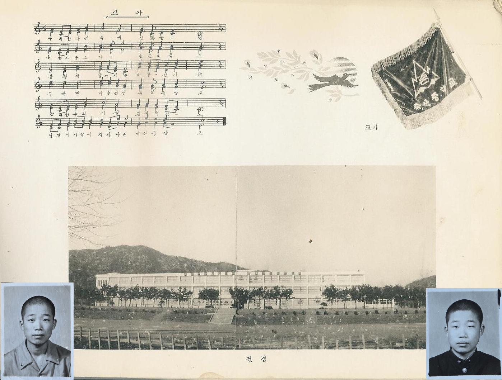
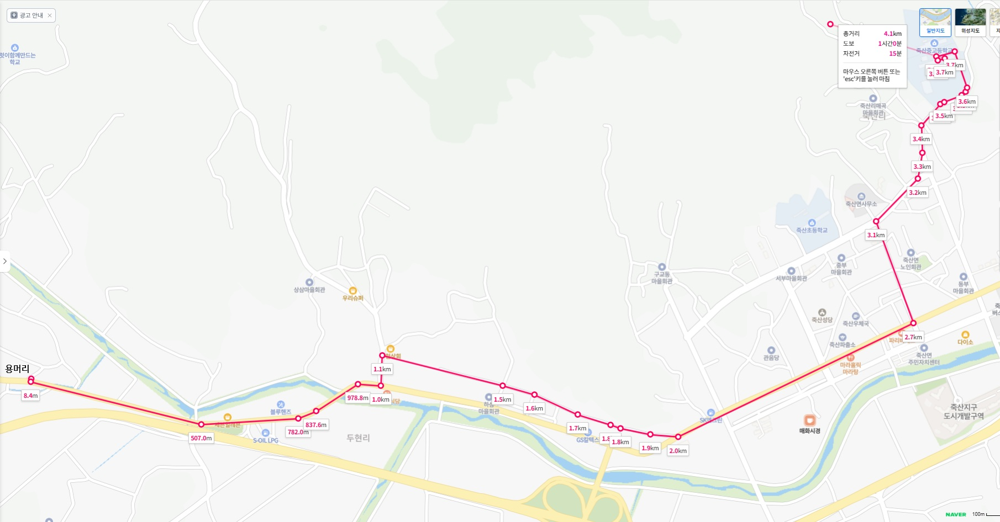
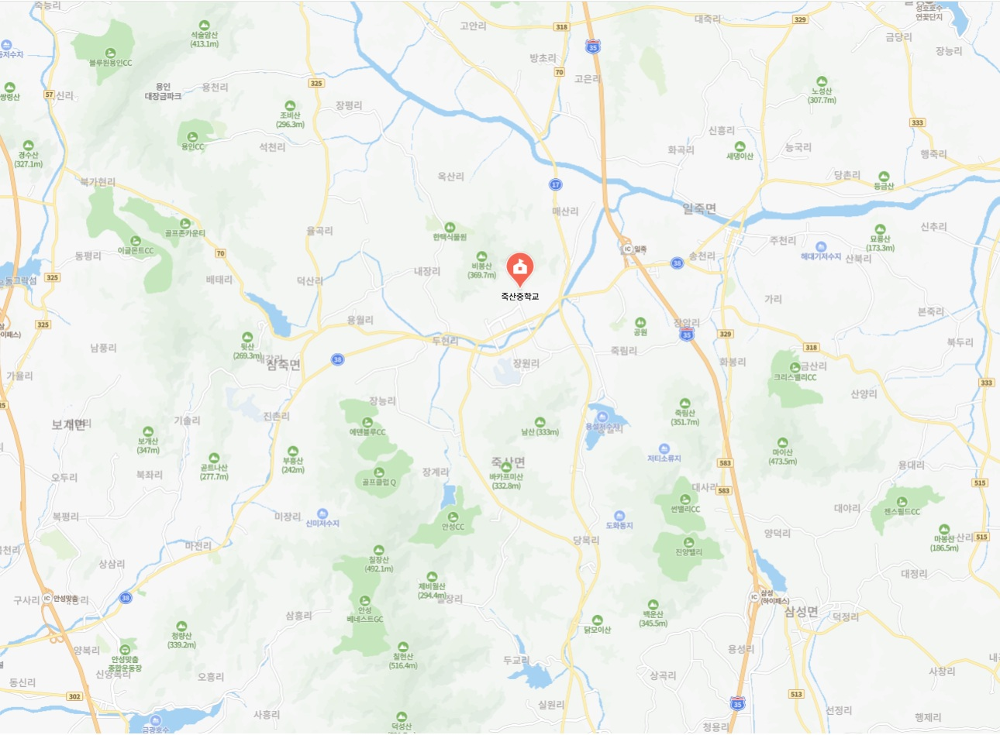

아침 햇살이 방문을 비추고 닭장에서 닭이 꼬끼요~ 하고 울면 얼른 일어나서 수돗가에서 이를 닦고 세수하고 늦지않게 얼른 아침을 먹는다. 아침 식단은 밥과 김치 또는 짱아치. 교복을 입고 엄마가 싸주신 도시락과 오늘 수업이 있는 책과 공책을 책가방에 담는다. 책가방을 저전거 앞 핸들에 걸고 자전거를 타고 힘차게 학교로 출발한다. 용머리에서 중학교로 가려면, 행길을 따라 안성의 반대쪽인 장호원 방향으로 가면 된다. 행길을 따라 500미터 정도 가면 우측에 삽다리가 보인다. 삽다리는 용머리와 맞닿은 동네로서 면이 서로 다르다. 용머리는 삼죽면, 삽다리는 이죽면. 이 두 동네는 8월 대보름날에 동네 패싸움을 하던 전통이 있었다. 무리로 몰려다니면서 상대 동네 젊은이를 만나면 괴롭혔다. 약간의 놀이가 개입된 싸움이라 심하게 패거나 그러지는 않았다. 하지만 언젠가 삽다리 사람이 용머리 우리 1년 선배에게 돌을 던져, 용머리 학생이 머리가 터진 사건이 발생하여, 마침내 양쪽 마을 어른들이 모여 이후로는 그런 놀이를 안 하기로 했다. 우리 동네는 이 놀이를 안하는 대신 마을 뒷산에 올라 횃불을 밝히고 풍년을 기원하는 행사로 대치하였다. 봉해, 병인, 칠호, 혜숙, 예식이는 용머리 친구이다. 삽다리에는 도기, 완기, 정기 친구 등 동창이 몇 명 살았다. 삽다리에서 안쪽으로 건진학교와 저수지가 있었고, 산 쪽으로 길을 더 들어가면 우리 아버지가 어릴적 살았던 능디라는 곳이 있다. 능디에는 우리집이 갈던 밭이 있었고, 주민증록을 떼어보면 아버지의 원적이 장능리 하장으로 되어있다. 장능리 상장쪽에는 골프장이 들어서 있고, 동창 중에 상균, 상돈, 승목, 상주, 한정 등이 장능리에 살았다. 삽다리에서 다른 길인 아래쪽 산 밑으로 돌아가면 종근, 석영, 용우, 종애, 태진, 미숙, 예식이 등이 살았던 중부들이 나오고, 너른 들과 예식이네 포토밭이 보인다. 중부들과 삽다리는 두평 마을이고, 두평, 상삼, 하삼이 모여 두현리가 된다. 상돈이와 종근이는 중대에서 학교를 다녔고, 종근이는 태평양을 거쳐 LG그룹 계열회사 이사까지 했고, 상돈이는 중대에서 박사까지 마치고 지금은 건설사업관리회사 회장님이다. 예식이는 나중에 우리 동네 용머리로 이사를 와서 우리 동네에 같이 살았다. 예식이도 씩씩해서 사업도 하고, 광운대 박사님도 되고, 요즘은 시민들에게 인공지능을 가르치면서 산다. 두평에서 산 쪽으로 더 들어가면 신정목장과 골프장이 두 개나 들어서 있는 장원리가 있다.

삽다리를 지나 행길을 따라 다리를 건너 가다가 찻길에서 빠져 좌측 세우개(세고개)로 들어가는 길로 들어간다. 행길에서 70미터 정도 안쪽에 삼거리(실제는 사거리) 가게가 있었고, 안성에서 삼죽을 지나오는 철뚝길과 만나 교차로를 이룬다. 이 길은 일제시절에 기차가 다녔던 철뚝길인데, 차가 지나가는 행길로부터 분리되어 안전하고 길도 매끈하고 좋았다. 이 길은 삼죽의 많은 친구들이 학교로 가는 길이다. 명애, 영훈, 영권, 영홍, 영일, 영헌, 광식, 유선, 성용, 갑수, 승두, 철희, 영식, 규창, 성호, 기호, 상규, 수철, 유춘, 병정, 일수, 재종, 주영기, 용삼, 종호, 동희, 규철, 기원, 경태, 호수, 광구, 기연, 순규, 두수, 주혁, 주성, 용배, 정숙, 본식, 순복, 명근, 승완, 성옥, 영희, 금례, 석희, 수자, 영순, 은수, 금주, 미현(문현) 이런 애들이 삼죽에서 오는 길이다. 삼거리 가게에는 먼 친척의 할머님이 장사를 하셨고, 이 가게 안쪽의 방에서 초등학교 시절 삽다리 친척 형으로부터 주산을 배운 적이 있다. 그때 주산을 배워서 5급, 4급을 땄다. 행길에서 들어오는 길로 계속 직진하면 안쪽에 세우개라는 동네가 있는데, 여기에는 미행이라는 동창이 있다. 미행이 아버지는 우리 아버지와 어릴적부터 아주 친하게 지냈던 것 같다. 세우개와 용머리는 멀지는 않지만 거리가 좀 있는데도 엄청 자주 오셨다. 어떤 때는 매일 오셨다. 오시면 아버지랑 얘기도 하시고, 밥도 같이 드시고 가셨다. 미행이 아버지는 나를 보시면, 미행이 얘기를 하면서 나와 같은 학년이라고 하시었는데, 나는 그 당시는 미행이와 초등학교가 달라 잘 몰랐다. 나중에 미행이를 만나 얘기해 보면, 자기 아버지가 내 얘기를 칭찬과 함께 많이 하셨다고 한다. 세우개는 상삼인데, 상삼에는 용근, 수형, 미선 등도 산다. 용근이는 늦깍이로 마라톤을 시작했는데, 많은 마라톤 대회에 참가하여 많은 상을 휩쓸고, 풀코스 115회 완주와 서브3를 103회를 달성하였다고 한다.
세우개로 가지 않고 삼죽 방향에서 오는 철뚝길을 따라 우측으로 꺽어져 죽산쪽으로 진입하여 석영, 연옥, 성수, 광헌, 경우, 경자, 전성열이가 사는 하삼을 지나고 쭉 더 가면 예전 양씨라는 분이 운영하던 정미소가 나온다. 우리는 주로 여기에서 쌀 방아를 찌었다. 쌀을 정미하면 백미, 쌀겨, 왕겨 등이 나온다. 왕겨만 벗겨낸 쌀이 현미이고, 우리가 사 먹는 일반 백미는 쌀겨층을 100% 다 깍아서 만든 10~12분도에 해당한다. 왕겨는 수분을 잘 흡수하고 공기가 잘 통하는 특성이 있어서 농업용 퇴비로도 사용하는데, 밭에 깔면 잡초 자람을 막고 수분 증발을 방지해준다. 또, 축사 깔개로 사용하여 수분과 냄새를 흡수하여 축사 바닥을 쾌적하게 유지해준다. 왕겨를 겨울밤 아궁이에 넣으면 아침까지 천천히 타면서 방을 따듯하게 한다. 쌀겨는 비타민, 미네랄, 지질 등의 영양소가 매우 풍부하여 가치가 높은데, 물이나 요구르트에 섞어 팩을 하면 천연 미용 팩이 되어 피부 미백과 보습에 좋다. 또한, 고급 식용유인 현미유를 짜내는 원료가 되기도 하고, 단백질과 지방이 많아 영양가 높은 사료나 비료로 활용된다. 같은집인지 모르겠는데, 정미소 옆에는 기름집이 있었다. 기름집에는 엄마랑 같이 많이 갔는데, 들기름이나 참기름을 짜거나, 고춧가루를 만들기 위해 자주 갔다. 기름집에서 고압 압착 기계로 참깨의 기름을 밀어내듯 완전히 짜내기 때문에, 남은 찌꺼기는 수분과 기름기가 거의 없이 아주 단단하고 납작한 원반이나 블록 모양의 딱딱한 덩어리인 깻묵이 된다. 깻묵은 고소한 향이 강하게 남아 있고 영양 성분이 풍부해서 비료나 가축 사료로 사용되고, 낚시 밑밥으로도 사용된다. 가끔 일부를 이빨로 깨서 먹어 보면 많이 딱딱하였다. 양씨 집안은 죽산땅의 대부분을 가졌다 한다. 그분 자식이 사업을 초기에는 잘하다가 나중에 실패해서 모든 재산을 날렸다고 한다. 승대네와 같은 집안의 친척이라 한다.
철뚝길에서 정미소를 지나면 다시 행길과 만나는데, 행길을 건너 철뚝길이 행길 뒤 개울사이로 계속 이어지지만, 보통 여기서부터는 행길을 따라 죽산 방향으로 갔다. 물론 행길 뒤편의 철뚝길은 한가하고 차가 없어 안전하여 가끔은 심심할 때 이리로도 다녔다. 행길을 따라 가면 여기부터는 관음당이 나오고 바로 왼쪽 산으로 들어가는 길이 있는데, 그 안쪽으로 가면 교회가 있고 그 안쪽으로 창호, 성의, 정배, 정원, 윤복, 윤하, 춘구, 정선, 명숙이 사는 구교동이 있다. 그 길로 들어가지 않고 죽산 쪽으로 계속 가면, 만섭, 용식, 종수, 영덕이네 사는 관음당이 나온다. 영덕이는 나중에 수원에서 형사를 했다고 하는 동창인데, 중학교 때 키가 크고 온순해 보였는데 나중에 무서운 형사가 되었다고 들어 좀 의외였다. 관음당을 지나면서 왼쪽으로 병원이 있고, 계속 직진하면 죽산 시내가 나오고, 왼쪽으로 경찰서를 지나면 우체국 골목이 나온다. 우체국은 우표를 사거나 편지를 부칠 때 가끔 간 것 같다. 수원에 사는 형에게 어머님의 메시지를 전하기 위해 전화를 하러 간 적도 있었다. 그때는 전화를 걸려고 하는 번호를 우체국에 얘기하면, 우체국에서 전화를 걸어서 그 저쪽이 받으면 그때부터 내가 전화를 인계받아 통화를 하였다. 전화 연결이 잘 안되다가 어렵게 연결이 되어, 형과 통화를 하던 중간에 전화가 끊겼는데, 끊겼다고 하니까 우체국에서 연결이 잘 안된다며 다시 연결해 볼까요라고 물어 봤는데, 사실 중요한 메시지는 미리 말했기 때문에 나는 되었다고 하고 전화 요금을 덜 냈던가 안냈던가 했다. 우체국 앞에는 농협에서 일했던 영환네 집이다. 중학교때는 아주 친해서 영환네 집에 가끔 놀러 가 잔 적도 있었다. 영환네 집은 중간에 땅으로 된 복도 같은 것이 있었고, 양쪽에 방들이 있었는데, 짧은 마루가 방 앞쪽에 있었다. 당시 영환이 여동생이 두 명인가 있었던것 같았다. 우체국 길 안쪽으로 더 들어가면 임광수네 집이 있다. 광수는 대학 졸업 후 대우에 입사해서 쭉 지내다가 현재는 쉐보레 왕십리 사장님이시다.
우체국 골목을 지나면 좌측에 예식장이 나온다. 우측으로는 비료와 농약 파는 가게, 낫이나 연장들을 파는 철물점, 장판과 벽지를 파는 지물포, 병원 등이 있고 여기를 지나면 왼쪽에 터미널과 죽산 시장이 나온다. 터미널을 끼고 왼쪽으로 돌아 죽산면사무소로 가는 길로 빠져서 들어가면, 왼쪽 시장을 지나 농협이 나오고, 직진하면 면사무소 앞이다. 농협은 2층 건물이었는데, 돈도 맡기고, 물건도 팔기도 한다. 농협 2층에는 예식장이 있는데, 광수가 여기서 결혼식을 했다고 한다. 농협 주변에 보창당 약국, 양조장 등이 있었다. 이 주변은 다 죽산 중부이고, 그 주변에 서익, 채진, 영규가 살았다. 면사무소 왼쪽에는 영원네 집이 있고, 그 왼쪽에는 죽산 국민학교가 있다. 죽산 중학교는 죽산 국민학교, 삼죽 국민학교, 광선 국민학교, 장암 국민학교, 일죽면 방초 국민학교, 용인군 장평 국민학교 등 6개 국민학교 학생들이 모이는 역사와 전통의 중학교이다. 우리 아버지도 여기를 다니셨고, 우리 형제 모두 여기 졸업했다. 남학생 4개 반 여학생 3개 반 등 총 7개 반이 있었는데, 그 중에서 죽산 국민학교 출신이 제일 많았다. 당시는 시골 형편이 어려워 중학교에 진학을 못하는 초등 동창들도 많았다. 이 친구들은 자선가들이 만들어 공짜로 가르치는 삽다리 건진학교, 나중에 매산리 재건학교로 이사한 기술학교에 갔다. 죽산 국민학교는 4개 반, 삼죽 국민학교는 3개 반, 나머지 학교들은 1~2개 반 정도 학급이 있었다. 많은 친구들이 죽산 초등학교 출신이다. 대중, 명숙, 영자, 현옥, 성례, 영순, 우영, 남철, 동수, 순희, 인숙, 은숙, 정배, 정원, 역선, 병길, 광이, 미영, 영준, 향숙, 수광, 웅수, 은창, 태호, 차희, 원화 등이 죽산 초등학교 출신이다. 서울에서 초등학교 선생님으로 재직하다가 정년을 한 일선이는 일죽 다니다가 죽산으로 전학왔다고 한다.
면사무소 앞에서 우회전을 하여 언덕길로 오르면 오래된 큰 느티나무가 있다. 느티나무 밑에는 동네 어르신들이 더위를 피해 그늘에서 휴식을 취하면서 오가는 학생들을 지켜봤다. 느티나무를 지나면 양쪽에 논밭길이 나오고, 계속 직진하면 매곡 향교로 가는 길과 중학교 가는 길이 분리되는 곳이고, 여기서 오른쪽으로 작은 다리를 건너면 가게 겸 문방구 및 자전거집이 나온다. 자전거포집 옆에는 자전거를 세워 두는 주차 공간이 있고 여기에는 학생들 자전거 수백대가 세워져 있다. 빈 공간을 찾아 자전거를 세우고, 학교 정문을 지나 학교 안으로 걸어 들어간다. 학교 안으로 들어가지 않고 우측 옆길로 돌아가면 죽주산성으로 가는 길이 있고 죽주산성 가기 전에 왼편으로 학교 옆쪽으로 방윤초, 방윤송, 방정수, 정덕현이가 살았다. 방씨들은 서로 친척들이다. 윤초가 학교로 가려면 쭉 담을 따라 정문으로 들어가서 다시 교실로 돌아가야 하는데, 윤초네 동네에서는 학교 교실 건물이 바로 담 넘어이다. 시간이 많을 때는 정문으로 가고, 급하면 담을 넘어 학교에 갔다고 한다. 정문을 지나 왼쪽 운동장을 끼고 돌아 올라가면 왼쪽에 3층 학교 건물이 보이고, 뒤편으로 좀 더 올라가면 1층의 학교 건물이 보인다. 앞쪽의 학교 건물 3층 동쪽 방향에 중학교 3학년 교실이 있고, 뒤편 1층 건물에 3학년 여학생 반이 있다. 3층 건물의 1층 중앙 현관에서 실내화로 갈아 신고, 1층 사무실을 두고 중앙 계단을 따라 2층 교무실을 지나 3층에 올라가면 복도가 있고, 왼쪽 복도를 따라가면 3학년 1반, 그 뒤로 3학년 2반, 그리고 3반, 4반 교실이 있다. 나는 3학년 2반이었고, 1반 복도를 지나 2반 교실 앞문을 열고 들어가면 책상 2개씩 붙인 총 4줄의 열이 있어 총 8분단이 있다. 창가에서 네 번째 분단의 앞에서 5번째 정도 책상이 내 자리이다. 의자에 가방을 걸고, 앉으면 짝 홍관희가 나를 반기고, 가방에서 책과 공책, 펜과 잉크를 꺼내 수업 준비를 한다.
일주일에 한번 정도는 운동장에서 조회를 한다. 연단에서 교장 선생님이 훈시를 하시고, 다른 모든 선생님들이 교장 선생님 양옆에서 같이 앉아 있다. 운동장에는 1학년부터 3학년까지 모든 학생들이 줄을 맞춰 서 있으면서 교장선생님의 훈시를 듣는다. 아마 처음에는 고등학교 선배들과 같이 조회를 했다가 나중에는 분리해서 중학교만 한 것 같다. 고등학생들은 교련복을 입고 조회를 하곤 했다. 교가를 부를 때면 녹음된 반주를 틀고, 그 음악 반주에 맞춰 교가를 불렀다. 가끔 교련이 있을 때는 악대가 연주도 하기도 한 것 같다. 가끔 조회 때 시상식도 같이 했다. 외부 대회에 나가서 상을 받아온 친구들이나, 중간, 기말고사 등에서 성적이 우수한 학생에 대한 상장 수여를 했는데, 내 이름이 몇 번 호명된 것 같다. 운동장 조회가 끝나면 모든 학생들이 교실로 한꺼번에 들어가는데, 현관 입구가 좁아 많이 밀렸고 실내화로 갈아신느라 복잡하였다. 운동장 조회가 없는 날은 담임선생님 조회가 1교시 바로 이전에 있다. 담임 선생님이 여러 가지 학교 전달 사항과 지시 사항을 말하곤 했다. 선생님이 바쁘시거나 특별히 전달사항이 없으면 담임 선생님 조회를 안하고 넘어가기도 했다.
1교시는 영어 수업이다. 3학년 4반 담임선생님이신 박금준 선생님이 앞문으로 들어오셔서 교탁에 서면, 반장인 나는 일어서서 차례~ 경례를 외친다. 학생들은 모두 고개를 숙이며 안녕하십니까? 하고 인사하고, 선생님은 그래~ 주말은 놀지 않고 공부 열심히 했나? 숙제는 다 했나? 하고 영어사전 검사를 시작한다. 앞에서부터 각 학생의 책상에서 사전을 들어보며 이거 어디 출판사야? 하면서 보다가 이것도 사전이라고 들고 왔냐? 하면서 집어 던진다. 다음 학생 사전도 보고 집어 던진다. 민중서관, 동아출판사, 이런 출판사만 살아 남는다. 이런 출판사의 사전은 좀 비싸다. 이름 없는 출판사의 사전은 좀 싸다. 그래서 이름 없는 출판사 사전을 많이 준비하는데, 영어 선생님은 가차없이 이를 던져 버린다. 다른 얇은 사전이 있었지만 나는 민중서관 사전을 추가로 더 샀다. 민중서관 사전은 종이가 얇고, 페이지 수가 많고 단어와 예문이 엄청 많다. 그래서 다행히 내 사전은 내팽겨치지 않았다. 영어 발음도 쉽지 않다. 선생님이 beautiful~ 읽어봐~ 하면 우리는 뷰티풀~ 그러면 선생님이 그게 아니고~ 따라 해봐~ 하면서 뷰~리퍼~ 하신다. 우리도 뷰우리퍼~하면서 따라 하였다. 박금준 선생님은 나중에 수원에서 선생님을 하시다가 정년 퇴임을 하게 되었는데, 동창으로부터 퇴임식에 같이 가자는 연락이 왔다. 나는 오랜만에 반가운 마음에 퇴임식에도 참가하고 동창들도 보고, 그 뒤로도 수원에서 몇 번 동창들과 같이 만나기도 하였다.
2교시는 과학시간이다. 백남춘 과학 선생님은 3학년 1반 담임선생님이시다. 나중에 짜리몽땅 김민순 선생님과 결혼했다. 과학 선생님은 좀 괴팍했다고 한다. 반에다 몰래 마이크를 설치해서 교수실에서 들었을 거라고 친구들이 얘기한다. 자기들이 선생님 없을 때 반에서 한 얘기들을 다 알고 있다는 것이다. 나는 그저 재미있는 선생님으로만 알고 있다. 내가 과학을 좋아해서 그럴 수도 있다. 3학년 3반 담임 선생님은 강태준 수학 선생님이시다. 이 선생님이신지 혹은 다른 수학 선생님인지는 내가 금오공고에 갈 때 그곳 교감 선생님께 편지를 써준 것 같다. 전에 양재동 지하에서 동창 모임을 했을 때, 강태준 선생님이 오셔서 본 적이 있다. 지금은 유튜브에서 색소폰 연주를 올리고 계시는데 구독자가 제법 된다. 나도 그 구독자 중의 하나이고, 전에는 각 연주 영상에 댓글을 꼭꼭 달았는데, 요즘은 바빠서 안 단지가 오래되었다.
우리반인 3학년 2반 담임 선생님은 최진호 기술 선생님이시다. 이분은 성격이 화끈하고 때론 무서웠는데, 한번은 수업 후에 구보를 하라고 해서, 내가 반장으로 인솔해서 거의 일죽 고개까지 갔다 왔는데, 선생님이 우리를 찾다가 찾다가 못찾고 나중에 우리가 도착하자, 그만 화가 나서 단체로 맞고 기합을 받았다. 그때, 엎드려 뻗쳐서 마포 자루로 엉덩이를 맞았는데, 하늘에 별이 빙빙 돌았던 것 같다. 선생님이 수업에서 출석을 부른다. 1번 김종호, 네~, 2번 양승상, 네~, 3번 손진섭, 4번 김도기, 5번 이주형, 6번 양승두, 7번 홍석배, 8번 최금범, 9번 이수정, 10번 안병대, 11번 박창식, 12번 신은철, 13번 황범수, 14번 안병만, 15번 유승현, 16번 곽병길, 17번 이일수, 18번 김정기, 19번 장석하, 20번 이상주, 21번 박수철, 22번 김영훈, 23번 주영기, 24번 정찬우, 25번 김준수, 26번 안학승, 27번 이은우, 28번 황병기, 29번 홍관희, 30번 김영홍, 나는 31번이다. 31번 이길흥, 네~ 32번 양철희, 33번 김영표, 34번 강성호, 35번 안광학, 36번 이종대, 37번 박한정, 38번 장화순, 39번 장석권, 40번 이윤일, 41번 김재수, 42번 유영덕, 43번 김덕중, 44번 김영일, 45번 이연호, 46번 박광선, 47번 정동섭, 48번 정연성, 49번 윤부석, 50번 신무승, 51번 윤영규, 52번 이광철, 53번 이현수, 54번 이경의, 55번 방윤송, 56번 유영환, 57번 김종혁, 58번 방윤초, 59번 신오영, 60번 오형근, 61번 김윤하, 62번 신원하, 63번 박수근, 64번 김득수, 네~. 출석을 다 부르면 수업을 시작한다.
3교시 기술 시간에는 무었을 배웠는지 잘 기억이 안난다. 전기가 보급되기 시작하고, 자동차도 많이 없고, 컴퓨터도 전혀 없던 시절이다. 라디오는 가정에 한 대씩 보급되었고, 텔레비전은 고가라 유지들이나 살 수 있어서 동네에 한두대 정도 밖에 없었다. 아마 자동차 4륜 엔진과, 오토바이의 2륜 엔진 같은 것을 배운것 같다. 수업 내용 이외에 기억이 남는 것은 김동산 기술 선생님이 해주신 금오공고 이야기, 그리고 최진호 기술 선생님이 일본 최고의 검객 미야모토 무사시를 다루는 소설 얘기를 해주신 것이었다. 1584년에 태어난 무사시는 어린 나이에 전투에 참여한 뒤 패배한 이후로 방랑길에 오른다. 무사시는 전국의 도장을 다니며 도장깨기를 했는데, 60여 차례의 결투에서 모두 승리했다. 28세에 평생의 라이벌이자 천재 검객인 사사키 고지로와 간류지마라는 섬에서 전설적인 최종 결투를 벌였다. 무사시는 약속 시간에 일부러 늦게 나타나 상대의 심리를 흔들었고, 긴 칼을 쓰는 고지로를 제압하기 위해, 속도의 중요함을 깨달아 배의 노를 깎아 만든 목검으로 그를 내리쳐 승리했다고 하는 얘기다. 기술 시간이면 수업은 대충하고 열심히 소설 얘기를 들었다.
최진호 담인 겸 기술 선생님은 내가 금오공고에 가는 것을 썩 좋아하지 않으셨다고 한다. 아버지가 금오공고가 나라에서 공짜로 가르친다는 얘기를 듣고 학교에 적극 찾아가서 요청을 하신 것 같다. 합격 소식을 들었을 때 다른 선생님들이 소 한마리 잡으라고 농담으로 했다고 어머니가 말했다. 내가 금오공고를 알게 된 것은 다른 대머리의 나이 드신 김동산 기술 선생님이 수업 시간에 금오공고에 들어간 3년 선배님 칭찬을 수업 시간에 침이 닳도록 하셔서이다. 그 선배는 3년 선배라 학교에서 직접 만나지는 못했다. 내가 일학년에 입학했을 때, 졸업을 해서 다른 모든 학생들이 그러하듯이 5년의 군에 간 것이다. 그 선배님은 제대 후 청주대학교 교수님이 되셨다. 그리고 내 금오공고 동기 한 명도 그 청주대 교수가 되었다. 그리고, 그 동기 교수 아들이 내가 있는 서울과기대 학교의 다른 학과 교수로 왔다. 그 아들 교수는 가끔 학교 식당에서 보고, 과기대 금오공고 출신 모임에 불러 같이 얘기도 했다. 최진호 선생님이 죽산중학교를 떠나 이천 고등학교인가에 있을 때, 한번 찾아가 뵈었다. 그때, 선생님은 내가 금오공고보다 일반고에 진학하여도 장학금 받으며 공부할 수 있고, 또 법대에 진학해서 판사가 되기를 바랬다고 했다. 판사 제자를 보고 싶은 게 꿈이라고 하셨는데, 다른 훌륭한 제자가 그 꿈을 이루어 주었으리라 생각한다. 그 이후로 연락이 없다가 나중에 내가 학교로 부임한 이후에 재경이로부터 최진호 교수님을 만나는데, 나오라고 해서 같이 몇 번 보게 되었다. 이후로 동창 모임에도 초대한 적이 있는 것 같고, 재경이와 함께 몇 번을 더 만났다가 지금은 연락이 끊어진 상태이다.
오전 4교시는 한문 시간이다. 한문 선생님은 우리 아버지와 이름이 같았는데, 폭력을 너무 많이 행사했다. 선생님의 오른손에는 언제나 50 센치미터 정도 되는 작은 몽둥이가 들려 있었다. 맨 앞자리 학생에게 이게 무슨 글자냐고 물어보고, 모르면 왜 모르냐고 몽둥이로 머리를 그렇게 아프게 때렸다. 그다음 뒤 학생에게 또 물어보고 그것도 모르냐고 또 때렸다. 가끔 안다고 대답하면 니가 뭘 알아 새끼야~ 하면서 또 머리를 무지막지하게 때렸다. 맨 뒷줄까지 갈 때도 있고, 중간에 끝날 때도 있다. 어쨌든 맨 앞줄에 있는 애들이 제일 많이 맞았다. 한문 시간이면 모두 머리에서 불이 났다. 나도 머리를 엄청 맞았다. 한번 맞으면 머리가 퉁퉁 부어올랐다. 지금 생각해도 이해가 되지 않았다. 그래도 당시에는 어느 부모도 학교에 이의를 제기하지 않았다. 아니, 대부분 학생들이 이런 얘기를 부모에게 하지 않았고, 설령 부모에게 얘기했더라도 부모들이 학교에 얘기할 처지가 안되던 시대였다. 한문 선생님이 항상 내는 숙제는 공책 한 장에 한문을 많이 써서 시커멓게 만들어오는 것이었다. 한문 시간이 오면 전날 손이 아프도록 종이에 연필로 한문을 쓰기도 하고, 그냥 막 원을 그려서 시커멓게 만들어 갔다.
오전 4교시가 끝나면 점심시간이다. 점심은 모두가 도시락이다. 먼저 점심을 먹기 전에 담임 선생님이 도시락 검사를 한다. 당시 나라의 경제가 어려워 정부는 보리밥을 섞어 먹도록 장려했다. 도시락 검사는 보리밥이 섞여 있는가를 보는 것이다. 그냥 쌀밥을 싸오면 선생님께 혼났다. 그래서 애들은 쌀밥위에 보리밥을 깔았다. 보리밥이 적어도 혼났다. 나는 아예 귀찮아서 꽁보리밥을 싸왔다. 밥을 먹으면 5교시까지는 조금 시간이 있다. 밥을 다 먹고 나서 용돈이 있으면, 3층 건물뒤에 있는 1층의 작은 건물 매점에서 도너츠를 사먹었다. 매점이 하나이고 학생은 많아서 사는 줄이 엄청 길었다. 한참만에 도너츠 하나를 사면 그 맛이 정말 꿀맛이었다. 씩씩한 애들은 운동장에서 축구 같은 것을 하면서 놀았다. 점심시간에 노는 시간을 더 많이 확보하기 위해 어떤 애들은 중간중간 쉬는 시간에 도시락을 까서 먹었다. 또는 배고파서 미리 먹고, 점심시간에는 남의 도시락을 좀 달라고 하면서 뺏어 먹기도 했다. 도시락의 반찬은 대부분 김치이다. 다꾸앙이나 오이 절임, 오이 짱아치, 마늘 짱아치도 있다. 제일 인기있는 반찬은 달걀 후라이나 달걀말이이다. 이런 반찬이 있으면 다른 친구들이 채가므로 뺏기지 않도록 조심해야 한다. 가끔 쉬는 시간에 회장실 가거나 자리를 비울 때, 다른 친구들 도시락을 몰래 까먹고 그 안에 개구리를 넣었다는 친구들의 무용담도 있었다.
5교시 음악 시간에는 박기옥 선생님이 들어오셨다. 나는 노래 부르기를 좋아한지라 음악 시간이 무척 즐거웠다. 새파란(새파란) 수평선(수평선) 흰구름(아니 먹구름) 흐르는(아니 멈추는) 오늘도(아니 내일도) 즐거워라~ 조개잡이 가는 처녀들~ 진주조개잡이라는 번안가요이다. 그때는 번안가요인지 잘 모르고 우리 노래인가하고 열심히 불렀다. 반에서의 합창은 즐거웠다. 또, 박기옥 선생님이 중국 노래 모리화를 불러주셨다. 참 좋아하는 노래라고 하셨다. 나도 이 노래를 자주 불렀다. 깊은 산 양지 바른 산 골짜기, 한송이 이름 모를 꽃 피었네. 찾는 이 없어도 벌 나비의, 노래와 춤만은 끊이쟎네. 얼음 녹아내린 시냇가에 향내가 넘쳐 흐르네. 사랑옵다 이름모를 꽃~ 나중에 박기옥 선생님을 영등포에서 동창들과 같이 만났을 때 이 노래 불러주신 것을 기억한다고 했다. 선생님도 그 노래 좋아했다고 하시고 가사도 기억하고 계셨다. 재작년 우리 기수 동창들이 이천만원이 넘는 기부금을 모아 학교에 전달했는데, 그 전에 학교에 가서 교장 선생님을 보고, 학교를 돌아 보았는데, 음악실에 기타 수십대와 다양한 악기들이 있는 것을 보고 참 부러웠다. 우리때는 그냥 선생님이 풍금 치면서 노래를 가르치셨는데, 요즘은 참 다양하게 많은 것을 가르치는 것 같았다. 나는 공고를 진학했고, 거기에서는 음악시간, 미술시간 이런 것은 아예 없었다. 그냥 혼자 개인적으로 기타를 사서 쳐보고, 라디오에서 흘러나오는 팝송을 듣고, 텔리베젼에서 나오는 가요톱10, 백분쑈 등을 즐겼다.
6교시는 국어 시간이다. 중학교에 국어 선생님이 여러분 계셨다. 중1 우리반 담임 선생님이셨던 정남석 선생님은 인자하시고 좋으신 분이셨다. 정남석 선생님 국어 시간에 산너머 남촌에는의 시에서 “산너머 남촌에는 누가 살길래, 해마다 봄바람이 남으로 오네, ...(중략)..., 남촌서 남풍 불제 나는 좋데나” 이런 구절이 있었다. 나는 선생님에게 남풍은 남쪽에서 불어오는 바람인데, 봄바람이 남으로 오네라는 부분이 방향이 반대로 써진 것 같다고 얘기했는데, 싯구절이라 남으로(부터) 오네라는 것이라 설명하셨다. 송영희 국어 선생님은 젊고 예뻐서 인기가 단연 최고였다. 졸업한 이후 나중에도 여러 동창친구들이 송영희 선생님을 찾아가서 남편되시는 분이 불편해하기도 했다고 한다. 박풍환 국어 선생님은 3반 담임선생님을 잠깐 하기도 했는데, 지금까지도 미혼이고 성격이 참으로 천진하시다. 학교에 있을 때 다른 선생님들이 유부귀 국어 선생님을 연결시켜주려고 했는데, 박풍환 선생님이 노~ 하셨다고 한다. 나중에는 박풍환 선생님이 관심을 가져 보았는데, 그때부터는 유부귀 선생님이 노~ 하셨다고 한다. 두 분 다 지금까지 솔로이시다. 유부귀 선생님은 여학생반을 주로 가르치셨는데, 2살 나이 많은 내 누님도 잘 알고 친했다고 한다.
언젠가 과학 시간에 장명자 화학 선생님이 들어오셨다. 당시 장명자 선생님은 젊은 여자 선생님이라서 그런지 갑자기 화도 내고, 또 웃고 성격이 좀 오락가락했다. 어느날인가 우리에게 책 몇 페이지 몇 단원 보면서 자습하라고 하고, 창문을 보면서 한숨 쉬며 때로는 눈물을 보이시는 것 같았다. 우리 반이 남학생 반이라 여자 선생님들을 놀리기도 하였는데, 언젠가 우리반 모두가 작당을 하고, 앞문 위에 분필이 잔뜩 묻은 지우개를 받쳐서, 문을 열 때 떨어져 몸에 맞도록 하였다. 선생님이 문을 열고 들어오다가 지우개가 떨어지고 직접 맞지는 않았지만 깜짝 놀래었고, 그 죄로 나는 대표로 교무실에 불려가 다른 선생님들께 혼나기도 했다. 수업중에 다른 애들이 뒤에서 떠들었다고 내가 대표로 여선생님께 손바닦으로 회초리를 맞은 적도 있다. 그날 이후, 우리는 항의의 표시로 수업시간에 모두 입에 테이프를 붙이고 수업을 받았다. 선생님들은 한편으로 웃고, 한편으로 노발대발하면서 끝낼 것을 종용하였다. 더 이상 지속하다가는 맞을 것 같아 이 항의는 며칠만에 바로 끝났다. 미술 선생님도 여자 선생님이셨다. 미술이 있는 날이면 준비물이 많이 좀 귀찮았다. 도화지, 물감, 빠레트, 물통 이런 것들을 책가방에 챙겨 가느라 분주했다. 물감이 오래되면 굳어서 못썼다. 잉크도 문제였는데, 책가방은 잉크가 새서 안쪽이 검게 물들었다. 체육 시간이 있는 날이면 체육복을 챙기느라 가방이 불룩했다. 내가 초등학교 때 밭에서 일하다가 짬짬이 산에 있는 나무를 골라 넘는 연습을 해서 중학교 1학년때는 체육시간에 높이뛰기 1위를 했다. 체육시간이나 조회시간에 가끔 가방에 있는 물건이 도난당하기도 한다. 그러면, 담임선생님이 모두 눈을 감으라고 하고, 가져간 사람 용서할테니 손을 들라고 했다. 모두 눈을 감아서 누가 손을 들었는지, 혹은 안 들었는지 그 당시 알 수는 없었다.
6교시가 끝나면, 집에 간다. 가끔 자율학습을 하기도 한다. 그러면, 나는 공부를 하나도 못하고, 몽둥이를 들고 떠들고 장난치는 친구들을 몽둥이로 다스렸다. 가끔 선생님이 불쑥 왔는데, 시끄러우면 내가 혼났기 때문이다. 어떤 애들은 그런 나에게 뭐라 하기도 했다. 김종혁, 김득수, 황병기, 김영표, 이일수, 김재수, 박광선, 이런 애들이 좀 시끄러운 애들이다. 특별 활동을 잠깐 하기도 했는데, 주산반을 했던 것 같다. 가끔 임원회의도 했었다. 전체 회장인 득수와 각 반의 반장과 임원들이 모여서 회의를 했다. 시험을 치면 각 반의 반장들이 자기반 점수를 순위대로 매기고 정렬한 것을 높은 점수부터 차례로 내놓아 쌓으면서 학년 전체 순위를 1등부터 440등까지 매겼다. 가끔 전체 학생이 모여 영화도 봤다. 전쟁이나 성경 영화 등이 생각난다. 학교는 당번과 주번이 있다. 당번은 매일 2명씩 지정이 되어서 아침 일찍 와서 교실을 정리하고 쉬는 시간에 잡일을 하고, 주번은 매주 지정이 바뀌면서 수업 후에 교실 청소를 했다. 일단 모든 책걸상을 뒤로 밀고나서 앞부분을 쓸고 물걸레질을 하고, 다시 책걸상을 앞으로 밀고 뒷부분을 청소한 후에, 책걸상을 교실 좌우 열을 맞춰 정리하면 끝이다. 우리반 인원이 총 64명이므로 당번은 한달에 한 번 정도 하였다. 주번은 분단별로 하였는데, 반에 총 8개의 분단이 있어서 8명이 한 분단이 두 달에 일주일 정도 주번을 한다. 청소를 마치면 교무실 선생님께 찾아가 얘기하여 검사를 맡고 가기도 하고, 선생님이 안 계시면 다른 선생님이 그냥 가라고 하기도 한다.
집으로 오는 길은 학교 가는 길의 역으로 가면 된다. 가방을 들고 자전거를 찾아서 자전거를 끌고 집에 간다. 집에 오는 길 학교 주변에는 장사하는 아저씨들이 학생들이 좋아할 만한 물건을 깔아 놓고 판다. 장난감, 만화책, 잡지, 구슬이나 딱지, 팽이, 막대사탕같이 까먹는 거 등을 놓고, 하교하는 학생들을 유혹한다. 대부분 그냥 지나가지만, 가끔 뭐가 있나하고 구경하기도 한다. 장날이면 시장쪽에 더욱 많은 물건들이 나열된다. 내가 관심있는 물건은 만화책이다. 가끔은 약장사가 판을 크게 벌였다. 특히, 구충제 약을 파는 장사에 사람이 많았는데, 침이 튀도록 한참 약 설명을 하고 있다가, 미리 약을 먹였다고 하는 어린애의 바지를 내려 회충이 항문으로 나오는 것을 보여주었는데, 그 어린애가 엄청 불쌍했다. 약장수는 진짜 회충약을 먹어서 나온 것으로 말하지만, 내가 보기에는 시간에 맞춰 벌레들을 아이 항문에 끼워 넣은 것 같았다. 아이는 같은 장사치의 일원이었을 것이고, 장사할 때마다 그런 고통을 견디었을 것을 생각하면 참 힘들었겠다는 생각을 하곤 했다. 일년에 몇 번은 극단이 시장 한쪽에 무대를 설치하고 물건을 판다. 물건을 팔기 전에 연극을 보여주었다. 연극 내용은 주로 사극이었다. 왕과 왕비, 힘들게 인연을 맺고 나중에 어렵게 다시 만나거나, 반란으로 쫒겨났다가 다시 반란은 진압하고 왕위를 찾는 그야말로 뻔한 신파적인 내용이다. 그래도 그때는 내가 어린 마음에 광장히 감동적이었다. 연극이 끝나면 물건파는 시간이다. 왕과 왕비, 공주, 시녀, 장수 등이 관객을 돌며 물건을 팔면 사람들이 연극 관람 비용으로 생각해서 많이 샀다.
집에 가는 길에 자전거 집에 자주 들렸다. 내 자전거는 중고를 산 것이라 툭하면 문제가 생겼다. 아주 간단한 것은 자전거포에서 공짜로 고쳐주었다. 대신 부품을 교체할 때는 돈을 받았다. 자전거 바람이 자주 샜던 것 같고, 용접으로 때운 부분이 또 떨어지기도 했다. 처음 1학년때는 학교를 걸어다녔다. 혼자서 무거운 가방을 낑낑대고 가면, 학교가는 다른 친구들이 내 가방을 자기들 자전거 앞부분에 걸어 주었다. 자전거 뒤에 타고 같이 가기도 하고, 실어준 가방이 많으면 옆에서 애들과 함께 같이 뛰어가거나 빠른 걸음으로 쫒아가기도 했다. 1학년 2학기땐가 2학년땐가 드디어 아버지가 부러진 자전거를 때운 중고 자전거를 사 주셨다. 부러진 부분을 때운 건데 이 부분이 툭하면 다시 떨어졌고, 그러면 자전거포에서 다시 용접을 했다. 남자애들은 주로 자전거를 타고 학교에 다녔는데, 여자애들은 다 어떻게 다녔는지 궁금하다. 찻길에 가까운 애들은 버스를 타고 다녔을 것이다. 달과리에 사는 재경, 미주(미자) 이런 애들은 삼죽 두둘기 차부에서 가깝다. 삼죽면사무소가 있던 개나리에 사는 광해도 찻길에서 가깝다. 삼죽초등학교 근처에 사는 선우(순자)도 차타고 다녔을 것 같다. 차도 없고, 걸어서 다니기에 아주 먼거리의 친구들도 많았는데, 오수근, 문호, 관우, 곽병근, 병영, 익균, 승문, 관희, 옥녀, 병숙, 병순, 병만, 주형, 보근, 자희 이런 장평 초등학교 출신 애들은 비봉산을 넘어 다녔다고 한다. 아침에는 여럿이 같이 한택식물원을 지나 비봉산을 넘었고, 수업이 끝나면 동섭이네 집 앞에서 모여 같이 집에 갔는데, 자율학습이 길어 늦은 밤에는 무서워서 멀리 산을 돌아서 늦게 집에 갔다고 한다. 장평 친구들은 학교 가는데 짧게는 한 시간, 먼 애들은 한 시간 반 정도 걸렸다 한다. 방초 애들은 같이 모여 하루에 한 번 다니는 버스를 타고 다녔다고 한다. 득수, 미령, 덕자, 혜숙, 태래, 호성, 강태, 복재, 전승, 연성, 영표, 영필, 학수, 정애, 영승, 병숙, 정순, 준기, 종성, 여란, 종래, 학재, 연서, 병대, 찬우, 학승, 욱환, 무승, 향승 친구들이 방초 출신이다. 겨울에 집으로 가는 길은 엄청 추웠다. 보창당 약국 시장 입구에는 오뎅이랑 홍합을 파는 천막이 있어서, 여기에서 홍합 하나 시키고 국물 여러번 더 달라고 하여 친구들과 같이 먹었다고 한다. 차부 옆에도 천막을 치고 붕어빵을 파는 곳이 있었다. 붕어빵 껍질은 따끈따끈하고 구수했으며, 속의 단팥은 달고 맛있어 입에서 살살 녹았다. 여름에는 학교 매점에서의 도너츠였고, 겨울에는 단연코 붕어빵이었다. 날씨가 추울수록 붕어빵은 더 맛이 있었다. 물론 찐빵도 맛이 있었다. 찐빵 안에도 단팥이 들어 있었다. 붕어빵은 지금 먹어도 참 맛이 좋다.
집에 갈 때 죽산시장을 지나서 바로 집에 갈 때도 있고, 시장에서 왼쪽으로 틀면 연못공원도 있고, 태권도장도 있고, 광재네 집도 있고, 담배 파는 은옥이네 집도 있다. 연옥 아버님도, 은옥이 아버님과 우리 아버님도 친한 친구사이라고 한다. 가끔 아버지 담배사러 그 집에 갔는데, 그때는 그 친구를 잘 몰랐다. 광재는 중학교 1학년 때 같은 반이었다. 광재가 반장, 내가 부반장 했다. 광재는 죽산 초등학교를 대표했고, 나는 삼죽초등학교를 대표했다. 시험을 보면 둘이서 1,2등을 바꿔가며 했다. 광재랑은 친해서 광재네 집에 자주 놀러 갔다. 광재 어머님과 여동생과도 친하게 지냈고, 잘 대해주었다. 한번은 내 손에 물집이 잡혔는데, 광재 어머님이 바늘로 물집을 따고 소독도 해주시었다. 광재는 1학년을 마치고 집안이 모두 서울로 이사를 했다. 광재를 다시 본 것은 대학교에서 였다. 고등학교 졸업 후 군대 5년을 마치고 대학에 들어가 보니 광재, 병근, 상균이가 그 학교에 다니고 있었다. 우리 네 명은 학교에서 자주 봤다. 광재는 정치외교학과, 상균이는 행정학과, 병근이는 경제학과, 나는 전자공학과를 다녔다. 상균이는 행정고시 준비하다가 졸업 후에 우리은행 지점장을 했고, 광재는 사법고시 준비하느라 시간을 많이 보냈다. 병근이는 연대에서 석사까지 마친 후 미국 유학을 해서 박사학위를 받은 다음 교수님이 되었는데, 명예퇴직 후 부부가 같이 동남아 선교 2년 나갔다가 최근에 돌아왔다. 서울에서도 면목동 광재네 집에 자주 놀러 갔다. 같이 데모도 참가했었다. 지금도 모임에서 가끔 본다.
중부를 지나 더 가면 찻길과 다시 만나게 되는데, 그쯤에 광선네 집이 있다. 광선네 집은 죽산 동부지역이다. 중학교때 박광선이랑 아주 친했다. 광선이네 안집 옆에 방 하나짜리 건물이 중학교로 바로 가는 다른 길목에 있어 자주 그 방에 놀러 갔다. 광선네 집에서 찻길을 건너면 운갑, 두형, 두수네 집에 있고, 서부쪽으로 올라 가면 평택에서 선생님하는 승현네 집이 있고, 그 근처에 경만, 한정네 집이 있다. 운갑이 누나가 학교에 직원으로도 잠깐 있었는데~ 운갑이 누나는 나한테, 운갑이에게 이번에 성적이 조금 올랐는데 계속 열심히 해서 더 잘하라고 얘기해달라고 해서, 운갑이에게 그런 사정을 얘기한 적이 있다. 그때 경만이랑 두영이는 죽산 텃세도 부리고 개구쟁이 짓도 좀 했지만 다 어릴 때의 일이고, 지금은 모두 친구들이랑 잘 지내고 있다. 경만이는 일본에서 공부하고 돌아와 한경대 교수님 임용 후 후학을 가르치다 퇴임 했다. 승현이네 집 옆으로 나 있는 길은 남산, 용설리로 가는 길이다. 수정, 윤일, 금범 이런 애들이 남산에 살았나? 남산은 장원리의 한 마을이고 두원공대도 위치하고 있다. 용설리는 여러 마을이 있는 리의 이름이고, 어쨌든 여기에 우리 동창들이 참 많이 있다. 다 합치면 거의 30명 정도 되는 것 같은데, 지금도 정기적으로 같이 모임을 한다고 한다. 승대, 원석, 학봉, 학래 사촌들, 변혜숙, 영숙 쌍둥이, 인복, 형우, 문혜숙, 기순, 경미, 우영, 연자, 을우, 주일, 향순, 유순, 승분, 경자, ... 너무 많아서 다 쓰기가 어렵네~ 미안~ 삼죽에도 동창들이 가장 많은 동네는 푸무실인데, 여기는 한 동네에 스무명 정도의 동창들이 있다. 태순, 박수근, 상식, 석하, 석권, 재식, 병일, 대식, 석헌, 영숙, 연근, 재숙, 영란, 조순자(선영), 석춘, 영옥, 동철, 형근, 남선, 미숙, 이런 애들이 푸무실에 산다. 용설리에서 일죽 쪽으로 장암 국민학교가 있었다. 하섭, 승조, 차희, 남철, 봉기, 현수, 원하, 광학, 관희 이런 친구들이 장암초 출신이다. 장암초는 보통 학년별 1반으로 구성되는데, 우리 친구들이 많아서 특별히 2반으로 운영이 되었다고 한다. 죽림리 친구들은 죽산중학교로 오고 다른 친구들은 일죽중학교로 갔다. 학교에 갈 때만 죽산에 간 것은 아니다. 주말이나 휴일에도 가끔 죽산에 물건을 사러 가는 경우도 있다. 백중일에는 부모님으로부터 용돈을 받고 죽산 가게에 가서 까먹는 날이다. 음력 7월 15일에 해당하는 백중은 여름철 휴한기에 접어든 농민들이 음식과 술을 나누어 먹으며 하루를 보냈던 농민들의 명절 혹은 농민들의 여름철 축제날이다. 백중이라는 이름은 이때쯤 과일과 채소가 많이 나와 100가지 곡식의 씨앗을 갖추어 놓았다는 데서 유래되었다고 한다.
초등학교때는 자유복을 입는다. 그때는 옷이 많이 없어 대부분 체육복인 츄리닝을 입고 사계절 학교를 다녔다. 중학교 입학 후에는 교복을 입는다. 교복은 동복과 하복이다. 동복은 검은색에 목에 딱딱한 칼라가 있고 후크로 잠그는 곳이 있는 옷인데, 후크가 매우 불편하다. 머리를 돌리기도 불편하고 밥 먹을 때는 또 덥다. 평시에는 풀고 다니다가 학교에 가면 잠근다. 모자도 무겁고 불편하다. 모자 앞부분이 세워져 있고, 중학교 큰 마크가 붙어 있다. 무슨 일본 순사도 아닌데, 이런 것을 써야 하나~ 머리에 비듬도 생기고 안 좋다. 교복의 장점이라고 할 것은 모두 같은 옷을 입으므로 잘 살고 못사는 집 티가 안난다고 해야 하나~ 안 그러면 초등학교때처럼 매일같이 츄리닝만 입고 다닐 판이다. 우리집은 넉넉지 않은 형편으로 교복을 살 때 3학년 졸업할 때까지 입을 만하게 큰 것을 샀다. 모자도 실내화도 아주 큰 것을 샀다. 이런 것들은 엄마와 함께 차부 바로 안쪽의 시장 한켠에 있는 문방구점에서 샀다. 어머님은 그집에서 형과 누나의 학용품 같은 것을 많이 샀었는지 그집 안주인과 좀 아는 듯했다. 교복도 크고, 실내화도 컷다. 그래서 1학년때는 불편했다. 2학년 말, 3학년 초에 가면 모두 몸에 맞았다. 이른바 몸이 자라 옷에 맞추어지는 것이다. 언젠가 겨울에 아이스 스케이트화를 하나 샀는데, 큰 형 발에도 큰 것을 사서 나와 동생들이 모두 같이 신었다. 운동화도 몇 년 신을 수 있는 만큼 큰 것을 샀다. 그래도 작은 것보다는 낫다. 작은 운동화는 발이 아프다. 하복은 그래도 시원하다. 문제는 간절기인데, 이 기간에는 교복이 춥거나 또는 더웠다. 요즘 학생들은 걸치는 것이라도 있는데, 그때는 그런게 없었다.
중학교 때 소풍은 죽주산성, 칠장사 등으로 갔다. 죽주산성은 학교 바로 옆에 있었고 학교 뒤 비봉산과 연결되어 있다. 3학년때 죽주산성으로 소풍을 간 기억이 있다. 허군욱이가 산성 밑에 매산리 동네에 산다. 병기, 병길, 영자, 은우, 석배, 광철 모두 매산리 사는 친구들이다. 매산리에는 상구산, 하구산, 미륵당, 함평 등의 마을이 있고, 함평 쪽 비봉산 밑에는 장광 저수지가 있다. 고등학교때 용머리 친구들이 예식이 친구들과 장광저수지에 놀러간 기억이 있는데, 밤에 비가 와서 함평 마을 친구네 집에서 비를 피한 적이 있다. 미륵당에는 오래된 석탑도 있고, 일제시대 처형을 집행했다는 돌로 된 단두대 같은 것도 있었다. 1학년때는 칠장사로 소풍을 갔다. 학교에서 칠장사로 한참 걸어간 것 같은데. 절 입구 천왕문에는 나쁜 기운과 잡귀를 막고 불법을 지키는 사천왕이 있었는데, 당시 처음 봤을 때 엄청 무서웠었다. 입구 양쪽으로 무섭고 튼튼한 모습의 왕이 둘 씩 있었다. 임진왜란때 왜장이 칼로 잘랐다는 비석도 쇠에 의지해 모습을 유지하고 있었고, 승려들이 단련을 위해 넘었다는 철당간도 있었다. 인목대비가 한때 이곳에 지내면서 썼다는 글씨도 있고, 암행어사 박문수가 시험을 보러 지나가다가 묵었는데, 7번이나 떨어지다가 꿈에 문제를 풀고 한양가서 장원급제 했다는 일화도 있다. 칠장사의 유래가 된 일화로 7명의 장사가 나무하다가 약수터에서 금으로 만든 박아지를 보고 집에 몰래 가져갔는데, 다음날 박아지가 약수터로 원위치되는 일이 반복되었고, 나중에는 스님에게 잘못을 빌고 절을 지었다는 전설도 있다. 궁예도 어린 시절을 여기서 보냈고, 임꺽정도 7명의 장사와 의형제를 맺었었다는 전설도 있는 제법 유서가 있는 절이다. 칠장사는 칠장산의 밑자락에 있는데, 바로 옆에 칠현산도 같이 연결되어 있다. 칠장산보다 칠현산이 조금 더 높다. 칠장산은 한남정맥과 금북정맥이 갈라지는 삼정맥 분기점이자 한남정맥이 시작되는 곳이다. 인근의 칠현산으로 산줄기가 이어지며, 경기도와 충청도를 가르는 중요한 지리적 중심지 역할을 한다. 한남정맥은 조선 시대 실학자 신경준이 저술한 산경표에 기록된 13개 정맥 중 하나로, 경기도 안성시 칠장산에서 시작해 김포시 문수산까지 이어지는 산줄기이다. 한강 본류와 남한강의 남쪽 유역을 이루는 분수령 역할을 하며, 경기 서남부 지역의 자연 지형을 형성하는 핵심 축이다. 칠장사 근처 광혜원 쪽으로 두교리에 광선 국민학교가 있다. 종혁, 선순, 김성수, 영채, 은철, 진섭, 부석, 승산, 재수, 영재, 두희, 승산, 자용, 선순, 한례, 연호, 성재 친구들이 광선 국민학교 출신이다. 중학교 2학년때 수학여행은 경주와 부산으로 갔다. 불국사의 다보탑, 석가탑을 봤고, 해운대에서 바다를 처음 보았다. 꾸불꾸불 태종대 올라가서 꽃시계도 보았다. 우리가 중학교 다닐 때는 중동전쟁으로 제1차 오일쇼크가 있었고, 그때 학교에서 졸업앨범을 간단히 만들기로 해서 우리 동창만 앨범이 션찮다. 그래서 그때의 학교 행사나 소풍, 수학여행에 대한 기록이 별로 없다. 선생님과 각반의 단체 사진만 달랑 있는 앨범은 내용이 없고 너무나 빈약했다. 그때도 선생님들 사이에서 앨범을 안 만들면 나중에 학생들이 앨범이 없어 실망할 것이라는 의견도 있었다는데, 최종적으로 간단히 만들기로 결정이 났던 것 같다. 선생님들 개인 사진이나 학교 행사 사진들을 보려면 선배나 후배들의 졸업 앨범을 봐야 한다.
대학교 때 잠깐 동기 친구들을 어린이 대공원에서 만난 것 이외에, 개인적으로 군이나 대학교, 회사를 다니면서 선생님들과 연락이 없었는데, 2005년 1월 8일 유부귀 선생님 육순 잔치를 잠실 롯데백화점에서 연락이 있던 이연자 등 몇몇 여자애들이 추진하면서 생겼다. 그때 친구들이 3~40명이 왔고, 유부귀 선생님, 온정실 영어 선생님, 박풍환 선생님 등 3분 선생님이 오셨다. 이분들 모두 싱글이시다. 온정실 선생님은 임용 후 처음으로 죽산 중학교에 왔는지, 무척 씩씩하셔서 학생들 엉덩이를 발로 차고 그랬다. 여기서부터 선생님과 친구들의 연락이 있었고, 나랑 신일선을 공동 회장으로 추대해 모임을 계속하자는 의견이 있어, 인터넷 다음에 까페를 만들고 연락을 하다가, 다음 해 잠실에서 동창 모임을 하면서 나중에 동창회로 발전을 하게 되었다. 이후로 변혜숙 동창의 전시회에서 유부귀, 박풍완 선생님을 보고, 내가 2007년 미국에 있을 때에, 유부귀 선생님의 연락을 받고 LA 공항에서 유부귀 선생님을 뵈었다. 2010년에는 윤상돈 친구가 회장, 금창호 친구가 부회장이었는데, 연말 동창회에서 박금준, 강태원, 유부귀 선생님이 오셨다. 나중에 영등포 백화점에서 연자 등 몇몇 동창과 함께 박기옥 음악 선생님을 뵈었고, 박풍환 선생님은 수시로 만나 테니스도 같이 하고, 변혜숙 개인전에서 보기도 하고, 중학교 동창회 행사에서도 계속 보는 중이다.
우리 동기들의 동창회가 다른 기수에 비해 잘 되는 것 같다. 동문회에서도 우리 동기들의 활동이 뛰어나고 적극적이다. 과거 성남시 구청장, 부시장을 했던 김학봉 동창이 동문회장도 했고, 선용식 동창이 부회장과 재경 등산 모임에서 열심히 활동했다. 일선, 영헌, 상돈, 상균, 혜숙, 득수, 서익, 창호, 승대, 명애, 예식, 용근, 광수, 문호 친구들이 동창회에서 열심히 봉사했고, 용식, 혜숙, 한례, 군욱, 종애, 미령, 용우, 정배 친구들이 산악회에서 많은 봉사를 해오고 있다. 재작년 모교 발전기금을 모을 때도 우리 기수가 이천만원이 넘는 동문기수 중 최고의 금액으로 기금을 모아 한푼도 낭비 없이 전액 학교에 기부하는 등 활동이 두드러졌다. 동문회의 등산 모임에도 우리 기수들의 참가율이 매우 높고 조직에서 주축 세력으로 직함을 맡는 경우도 많다고 한다. 또한 과거 선생님들과의 관계도 돈독히 유지하고 있다. 지금도 우리 동기들은 각자의 위치에서 나라에 헌신하고, 가족을 부양하고, 선후배님들 잘 모시고, 동기들과 화목하게 지내고, 자신의 인생을 즐기고, 자아의 꿈을 실현하기 위해 부단히 노력하고 있다. 우리 동기들은 죽산, 삼죽, 방초, 광선, 장암, 장평 등 여러 초등학교 출신들이 함께 모여서 하나의 큰 용광로에 섞여, 거대한 불꽃을 이루며 활활 타오르는 멋진 친구들이다.
